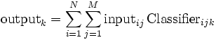

![[Main Page]](../../rsrc/bci2000logo.svg)
LinearClassifier
User Reference
Function
The LinearClassifier computes a projection of a high-dimensional signal feature space onto a low-dimensional classification space. Thus, each dimension of classification space is a linear combination of signal features. Input data has 2 indices (N channels x M elements), and output data has a single index (C channels x 1 element), thus the linear classifier acts as a N x M x C matrix, determining the output after summation over channels and elements:

- In a BCI based on demodulation of a periodic EEG component (such as the Mu Rhythm BCI), the LinearClassifier's input is the time-varying amplitude or power spectrum for a number of spatially filtered EEG channels. Its output is later normalized with respect to mean and variance, and then used as a control signal to determine cursor movement.
- In an ERP-based BCI (such as the P300 BCI), the LinearClassifier's input is a sequence of averaged EEG time courses obtained in response to a number of stimuli, and its output is considered to represent a log-likelihood ratio for each of these responses to be an ERP.
Parameters
Classifier
The Classifier parameter is a sparse matrix definition in which each row corresponds to a single matrix entry. Columns correspond to
- input channel,
- input element (bin in the spectral case, time offset in the ERP case),
- output channel,
- weight (value of the matrix entry).
Input channels may be specified by ordinal number, or by textual label if available (e.g., CP4). Input elements may be given as ordinal number, or using appropriate units (e.g., 10Hz, or 120ms).
States
None.
Examples
Mu Rhythm Examples
For these examples, let us assume that you set the ARFilter's FirstBinCenter to 0, and BinWidth to 3Hz. This allows you to refer to the respective bins by their frequency, i.e. 12Hz rather than 5. We also assume that, in the SpatialFilter, you have entered labels for output channels. This allows you to refer to channels by their names, i.e. CP3 rather than 7.
1D cursor movement
You want to give feedback from electrode CP4, using the amplitude between 10.5Hz and 13.5Hz for cursor feedback. Then, the Classifier parameter will have a single row, containing
| input channel | input element | output channel | weight |
|---|---|---|---|
| CP4 | 12Hz | 1 | 1 |
2D cursor movement
You want to use mean activity from the left and right hand areas at 12Hz to control movement in horizontal direction. Additionally, you want the difference between left and right hand areas at 24Hz to control movement in vertical direction. In the CursorTask application, the horizontal direction (X) corresponds to channel 1, and the vertical direction corresponds to channel 2. Accordingly, your Classifier parameter will have the following 4 rows:
| input channel | input element | output channel | weight |
|---|---|---|---|
| CP3 | 12Hz | 1 | 0.5 |
| CP4 | 12Hz | 1 | 0.5 |
| CP3 | 24Hz | 2 | -0.5 |
| CP4 | 24Hz | 2 | 0.5 |
Note that, in the above example, subtracting CP3 from CP4 in the classifier is not equivalent to taking the difference in the SpatialFilter. This is because, for a Mu Rhythm BCI, spatial filtering is followed with computing spectral amplitudes, and feature combination amounts to an addition of spectral amplitudes. Computing spectral amplitudes involves taking the absolute value (or its square), which is a nonlinear operation, with in general.
ERP classification
Often, you will use a computer program to optimize the classifier for use with ERPs. However, for the sake of an instructive example, let us assume that you want to classify based on the temporal mean between 280 and 300ms, and the spatial mean from electrodes Cz and Pz, that your sampling rate is 250Hz. Then, there will be 6 samples in that range, starting with sample number 70:
| input channel | input element | output channel | weight |
|---|---|---|---|
| Cz | 70 | 1 | 1 |
| Cz | 71 | 1 | 1 |
| Cz | 72 | 1 | 1 |
| Cz | 73 | 1 | 1 |
| Cz | 74 | 1 | 1 |
| Cz | 75 | 1 | 1 |
| Pz | 70 | 1 | 1 |
| Pz | 71 | 1 | 1 |
| Pz | 72 | 1 | 1 |
| Pz | 73 | 1 | 1 |
| Pz | 74 | 1 | 1 |
| Pz | 75 | 1 | 1 |
Note that, unlike in the case of spectral features, there is no difference between spatially combining channels in the LinearClassifier or in the SpatialFilter. Thus, you might as well combine Cz and Pz into a channel labeled "Cz+Pz" in the SpatialFilter, and then use this classifier configuration:
| input channel | input element | output channel | weight |
|---|---|---|---|
| Cz+Pz | 70 | 1 | 1 |
| Cz+Pz | 71 | 1 | 1 |
| Cz+Pz | 72 | 1 | 1 |
| Cz+Pz | 73 | 1 | 1 |
| Cz+Pz | 74 | 1 | 1 |
| Cz+Pz | 75 | 1 | 1 |